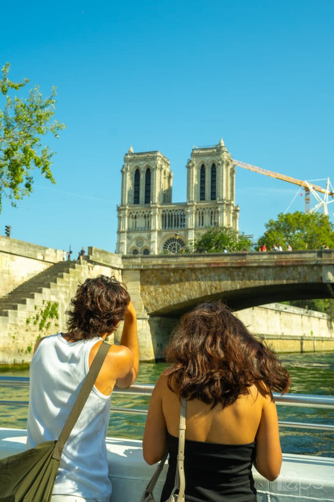
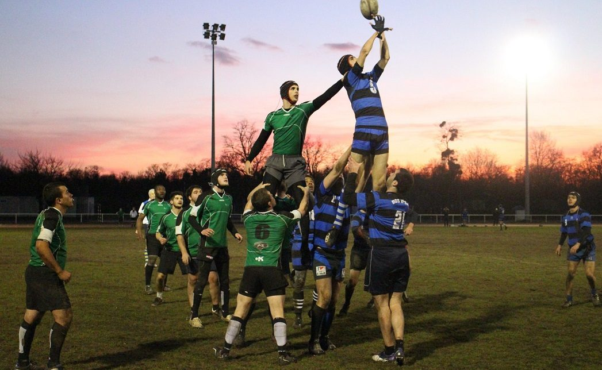
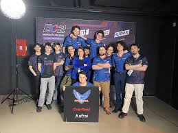
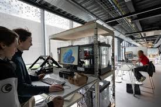
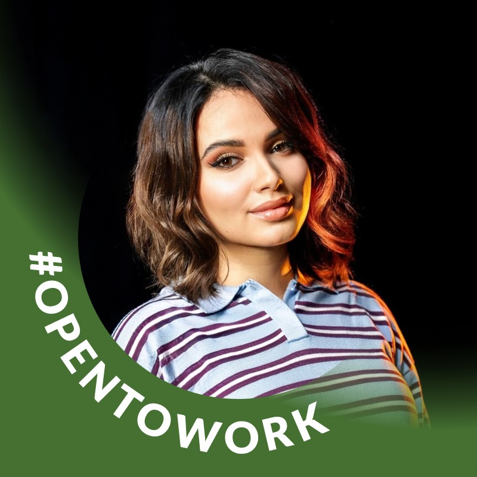

Vie Étudiante & Campus
Un environnement dynamique pour s'épanouir et innover.
Une Vie Associative Riche
Avec plus de 60 associations, l'Efrei propose un parcours extra-académique unique : sport, tech, humanitaire ou gaming.

Cult’Efrei
C’est le club qui permet aux étudiants de découvrir la capitale, ses monuments, ses musées et ses galeries.

Le Bureau Des Sports (BDS)
Il regroupe la plupart des sports de l’Efrei : rugby, football, fustal, basketball, badminton, tennis, volley, natation, tennis de table… Elle coordonne les séances, met à disposition le matériel, les terrains et organise des événements.

CTfrei
CTfrei initie les étudiants aux CTF (Capture The Flag) et à la cybersécurité. Elle participe à des CTF universitaires et forme une équipe pour la compétition InCyber.
Le Campus de Villejuif

L'Innovation Lab
Un espace de 150m² dédié au prototypage avec imprimantes 3D, découpes laser et casques VR pour donner vie à vos projets les plus fous.

Cadre de vie
Le campus Efrei est situé au 30-32 avenue de la République à Villejuif (94800), à 3 minutes de la station de métro : Villejuif – Louis Aragon (ligne 7) et à 20 minutes du centre de Paris.
Paroles d'étudiants

Niama - M1 Management & Digital Transformation
Les cours sont pensés pour nous préparer directement au monde professionnel : projets en groupe, études de cas réelles, et surtout la possibilité de faire de l’alternance. L’école met vraiment l’accent sur l’accompagnement : on est suivis par nos responsables pédagogiques et nos managers en entreprise, ce qui aide à se construire un projet professionnel concret et cohérent
Antoine - Prépa cycle Ingénieur
Malgré le contexte sanitaire actuel, EFREI Paris a su mettre en place d'importants moyens à dispositions des élèves pour leur assurer un suivi pédagogique de bonne qualité. Une vie associative extrêmement riche, et de bonnes garanties à la fin du cursus.